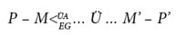
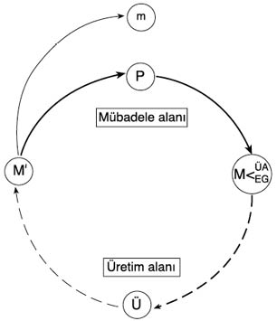

4

SANAYİ SERMAYESİ DEVRESİ

Kapital’in 1. cildi, büyük ölçüde kendi kendine yeten bir bütün olup, esas olarak üretim açısından kapitalizmin ve onun gelişme sürecinin genel bir tahlilini verir — sermayenin artık değer yaratmasını mümkün kılan toplumsal ilişkiler nelerdir ve bunlar, üretim çevresindeki iktisadi ve toplumsal gelişmeleri nasıl doğurur? Kapital’in öteki iki cildi, bu genel tahlili hem geliştirmeye hem genişletmeye ayrılmıştır. Bu sebepten ötürü, 2. cildin başlangıcının sermaye devresini tahlil etmesi yerindedir. Bunun nedeni bir dizi görüngüyü –ticari, faiz getiren ve sabit sermayeyi, gelir ve çıktı dağılımını, sermaye devrini, üretici olan ve olmayan emeği ve bunalımları– anlamanın temelini sağlamanın yanı sıra, 1. ciltte tahlil edilmiş toplumsal üretim ilişkilerinin daha somut biçimde sunulabileceği bir iktisadi yapıyı ortaya koymasıdır. Bir başka deyişle, 2 ve 3. ciltler, üretimin 1. ciltte incelenmiş değer ilişkilerinin mübadele ve bölüşüm süreçleri ve yapıları aracılığıyla daha karmaşık sonuçları nasıl ortaya çıkardığı üzerinedir.
Parasal Sermaye Devresi
2. cilt, parasal sermaye devresinin açıklanmasıyla başlar. Bu, sermayenin, kendini genişleten değer olarak nitelenmesinin (bk. 3. bölüm) üretim süreci açıkça hesaba katılarak genişletilmesidir. Sanayi sermayesi devresinin genel biçimi şöyledir:
P – M ... Ü ... M’ – P’
En genel koşullarda ve üretilen meta ne olursa olsun sanayi sermayecisi, emek gücü (EG) ve üretim araçları (ÜA) dâhil, meta girdilerini (M) satın almak için para-sermaye (P) öndeler. Şunu kavramak gerekir ki, yukarıdaki devrede sermaye olarak iş gören, para olarak para (dolaşım ya da ödeme aracı işleviyle para) değildir. Tam tersine. Para, alışverişler için gereklidir; ama onları kendi başına mümkün kılmaz. Emek gücünün üretim araçlarından mülkiyet bakımından ayrılmasıdır –toplumsal ve sınıfsal bir üretim ilişkisidir– ki, belirli bir grup insanın (sermayeciler) başkalarını (işçiler) ücret karşılığında işe almasına olanak verir. Bunu, sermaye devresinde üretim araçları ile emek gücünü açıkça ayırarak vurgulayabiliriz:

Satın alınınca girdiler (M) üretken sermayeyi (Ü) oluşturur. Üretim, emek gücünün üretim araçları üstünde çalışmasıyla ilerler; sonuç ise farklı meta çıktılarıdır (M’). M ile M’, girdilerin (M) satın alınması ile çıktıların (M’) satılması arasına üretimin girmiş olduğunu göstermek için noktalarla Ü’ye bağlanmıştır. Üretilmiş metalar, kullanım değerleri üretim araçlarınınkinden farklı olduğu için (genellikle öyle olmakla birlikte) değil, öndelenmiş sermayenin değerinden, P’den, daha fazla artık değer kapsadıkları için M’ ile belirtilir. Bunu, çıktının daha çok para-sermaye karşılığında satılması, P’ > P, ile gösteriyoruz.
3. bölümde, artık değerin, yani m = ΔP’nin (burada Δ fark ya da değişme demektir), emek gücünün, üretimde harcanan emek-zamanın (yaratılan değerin) altındaki bir değer üzerinden satın alınmasıyla üretimde yaratıldığını göstermiştik. Artık değer, ilk kez üretimden hemen sonra meta biçiminde meydana çıkar. Girdilerin (özellikle emek gücü, aletler ve makineler) çıktıya katkıları bakışımlı gibi göründüğü için, artık değerin yaratılmasını, fark gözetmeden bütün faktör girdilerinin üretkenliğine izafe etmek kolaydır. Oysa emek gücünün değeri karşılığında serbestçe mübadelesinin üretimden önce yer almasına (ücretlerin ödenmesi gecikse bile) karşılık, artık değerin görünmesi, üretimin olup bitmesinin sonrasına dek ertelendiği için, artık değeri, fiilî emek-zamanın gerekli emek-zamandan fazla olmasına izafe etmek zordur.
Üretilmiş değer (ve artık değer) çıktının piyasada satılmasıyla şimdi paraya çevrilir. Satış geliri P’’nü elde edince sermayeciler, sermaye devresini ya aynı ölçekte (ilk öndelik olan P’yi verili fiyatlar ve teknolojilerle yenileyerek ve artık değeri tüketime harcayarak) ya da artık değerin bir parçasının yatırılması yoluyla, genişletilmiş bir üretken devreye girişerek yenileyebilirler (bk. aşağıda ve 5. bölüm).
Bir Bütün Olarak Devre
Yukarıda (ve 3. bölümde) sermayenin, değerin kendini genişletmesinde –artık değerin üretilmesi, mülk edinilmesi ve biriktirilmesinde– işin içine giren toplumsal ilişki olduğunu göstermiştik. Sermaye, kendini genişleten değer olarak özünde bir süreçtir, değeri yeniden üretme ve yeni değer üretme sürecidir. Bir başka deyişle, sermaye, kendini sermaye olarak yeniden üretme sürecindeki değerdir. Sermaye devresi bu hareketi tarif eder ve sermayenin devresi ya da yeniden üretim süreci içinde farklı biçimler aldığı olgusunu vurgular. Sermaye denilen toplumsal ilişki, para, üretken sermaye ve emtia biçimlerine birer kılık olarak art arda bürünür; sonra da bunları üstünden atar.
Sanayi sermayesi devresi en iyi bir dairesel akım diyagramıyla temsil edilir (bk. şekil 4.1). Bu devre, kapitalist ekonominin temel yapısını, (artık) değer üretilir, dağılır ve mübadele edilirken üretim ve mübadele alanlarının sermaye hareketi aracılığıyla nasıl birbiriyle bütünleştiğini ortaya serdiği için önemlidir. Devre kendini yinelerken artık değer (m), dışarı atılır. Bu, kendini genişleten değer olarak sermayenin yalnız belirli toplumsal üretim ilişkilerini kucaklamadığını, aynı zamanda çeşitli aşamalardan geçen dairesel bir hareket olduğunu gösterir. m, sermaye olarak kullanılmak üzere biriktiriliyorsa, genişletilmiş yeniden üretimi, dışa dönük bir sarmal hareketle temsil edilmiş olarak düşünebiliriz.
Sanayi sermayesi şu üç kılığına birbiri ardınca girer: para-sermaye (P), üretken sermaye (Ü) ve meta-sermaye (M’). Her bir biçim, devrenin kendisini ön gerektirdiği için öteki ikisinin varoluşunu da ön gerektirir. Bu, sermaye biçimlerinden her birinin özgül işlevini, sermaye olarak genel işlevinden ayırt etmemizi mümkün kılar. Var oldukları toplumlarda para, faktör girdileri ve metalar, her zaman sırasıyla ödeme aracı, üretim aracı ya da bir mübadele değeri emanetçisi olarak işlev görebilir; ama ancak sermaye devresinde bu işlevleri sıralı olarak izledikleri zaman, sermaye olarak iş görürler. O zaman para-sermaye, emek gücünü satın alma aracı olarak, üretken sermaye, artık değer üretme aracı olarak, meta-sermaye ise, satış sırasında para olarak gerçekleştirilecek artık değerin emanetçisi olarak davranmış olur.

Şekil: 4.1 Sermaye devresi
Devre boyunca hareket ederken iki faaliyet alanı saptanabilir: üretim ve dolaşım (mübadele). Üretim alanı M ile M’ arasında uzanır. Bu alanda kullanım değerleri dönüştürülürken değer ve artık değer yaratılır. Hem bölüşülecek olanın ne olduğunu hem de mal ve değerlerin bölüşülme yapılarını ve süreçlerini açıkladığı için bundan Marx’ın bölüşüm teorisi açısından derin sonuçlar çıkar. Dolaşım alanı, M’ ile M arasındaki mübadele sürecini ve artık değerin, m’nin, gerçekleşmesini kapsar.
Mübadele sürecinde sermaye ve emek kullanılsa bile, bunların çıktıya değer eklemediğini 3. bölümde göstermiştik. Bu sonuç ana yolcu iktisatçılara tuhaf görünür; çünkü onlar, genellikle, üretim ve mübadelede kullanılan bütün faktörlerin (bağımsız olduğu varsayılan) katkısını derneşik hâle getirerek bir fiyat teorisi elde etmekle ilgilenirler. Oysa Marx, toplumsal üretim ve bölüşüm ilişkileriyle ve devre sırasında yeni üretilen değerleri bölüştürme yöntemiyle ilgilenir. Örneğin ticari sermayenin değer eklememesine karşılık bunun, üretilmiş değerden bir pay almasını önlemediğini öne sürer (bk. 11. bölüm).
Sermaye devresi, yukarıdaki şekil 4.1’de olduğu gibi dairesel biçimde inşa edilince, devreyi para-sermayeyle açıp kapatmak isteğe bağlı olur, nasıl ki bir dairenin başı sonu yoktur. Para devresinin, dolaşım alanının üretim alanınca kesilmesini kapsadığına dikkat edelim. Sermayeyi kendini genişleten değer olarak nitelerken, sermayecilerin güdüsünün, daha pahalıya satmak için satın almak olduğunu göstermiştik. Nitekim para devresi açısından bakıldığında üretim, sermaye için, para kazanma sürecinde zorunlu ama talihsiz (hatta israflı) bir kesilme gibi görünür. Tüccar sermayesi ile faiz getiren sermaye, başka bakımlardan üretime bağlı olmalarına karşın bu kesilmeden kaçınır. Ne var ki bireysel bir sermaye için doğru olan bütün (hatta çoğu) sermayeler için geçerli değildir. Bir ulusun sermayecileri, kaçınılmaz üretim bağlantısı olmadan kâr etme çabasına kapılırlarsa kendilerini, ekonomi –kâr paylarını ödemek, borçları kapatmak, faiz taahhütlerini karşılamak ve finansal yükümlülükleri tasfiye etmek için gerekli olan değerin tek mümkün kaynağı olarak– üretimin gerekli olduğu gerçekliğiyle yüz yüze gelince eninde sonunda çökecek olan spekülatif bir patlamanın içinde bulurlar (bk. 7 ve 12. bölümler).
Marx, devreyi öteki iki açıdan, üretken sermaye açısından ve meta-sermaye açısından, da tahlil eder. Üretken sermaye devresi Ü ile, yani üretimle başlayıp biter. Devrenin amacı üretim, artık değer biriktirildiği ölçüde de genişletilmiş bir ölçekte üretimmiş gibi görünür. Para devresinin tersine üretken devre için dolaşım alanı, üretim sürecine yapılmış zorunlu ama istenmeyen bir müdahale gibi görünür. Ama yukarıda gösterilmiş olduğu gibi (artık) değer üretmek yetmez; onu satışta gerçekleştirmek de gerekir. Mübadelenin bu zorunlu ama belirsiz aracılığını yok sayma eğilimi gösterenler sermayecilerden çok iktisatçılardır; çünkü bilerek ya da bilmeyerek, gittikçe büyüyen bir meta envanterini, gelecekte satılacağı beklentisi ya da umuduyla üreten bir sermayeci, çok geçmeden, işletme sermayesi kaybına uğrayarak gerçeklikle yüz yüze gelir. Nihayet meta-sermaye devresi M’ ile başlayıp biter; dolayısıyla amacı, tüketim yaratmak gibi görünür. Dolaşım alanını üretim alanı izlediğinden alanlardan hiçbiri ötekini kesmez; dolayısıyla hiçbiri gereksiz ya da israflı gibi görünmez.
Üç sermaye devresi, devrenin bütününün içinden çıkarak oluşur. Neden dört tane sermaye devresi olmadığı, devrenin üstündeki her bir “düğüm”ün (Ü, M’, P ve M) birer başlangıç ve varış noktası oluşturmadığı merak edilebilir. M’nin bir sermaye devresinin temeli olmayışının sebebi sermaye olmayışıdır. Satın alınmış üretim araçları bir başka sermayecinin meta üretimi, dolayısıyla meta-sermaye olabilir. Ne var ki emek gücü, satın alınıncaya kadar asla sermaye değildir; o zaman da, üretilmiş artık değer içermek zorunda olan meta-sermaye değil, üretken sermaye hâline gelir. Dolayısıyla teknik açıdan kapitalizm, ham maddeler için kendi kendine güvenebilse bile her zaman ve ister istemez, emek gücünün salt üretim sisteminin dışında toplumsal olarak yeniden üretilmesine bağlıdır (bk. 5. bölüm). Bu, iktisadi gücün yanı sıra siyasi, ideolojik ve yasal güç kullanımını gerektirir. Önemli olan, emekçiyi işe koşmaktır. Bir makineyi işe koşarken aynı sorunlar söz konusu değildir.
Sermayenin yeniden üretim sürecine, her bir sermaye devresine tekabül eden farklı bakışlar inşa edilebileceğini yukarıda göstermiştik. Bunların kapitalizmi eleştirmemesi gerekmez; ama üretim, tüketim, mübadele, kâr etme ve birikim süreçlerinden birini ya da birkaçını ötekiler aleyhine vurguladıkları için teker teker her zaman yetersiz kalırlar. Örneğin emek gücü ile üretim araçları, ancak bir anlık, devreye girdikleri sırada, birbirinden ayrı olarak görünür; ama sonra, sermaye oluşturmadıkları için, devreyi bir bütün olarak içine alan bir bakış geliştirmezler. Ana yolcu iktisat teorisi, kısmen bu sebepten ötürü sınıf ilişkilerini büsbütün dışarıda bırakabilir. Ne var ki bu ilişkiler, üretim ilişkileri değil de, bölüşüm ya da mübadele ilişkileri olarak ana yolcu teoriye girer.
Para devresi ise mübadele modellerini telkin eder. Ana yolcu iktisat için, arz ile talebin eşleştirilmesi her şey hâline gelirken sermaye ile emek, salt birer üretken hizmet olarak görülür. Güçlükler, sırf, fiyat (ve faiz oranı) mekanizmasının yerine getirdiği bilgilendirme hizmetleriyle bağlantılıdır. Üretken devreye gelince, o da, piyasayı yok sayma eğilimi gösterir; neo-klasik ve çoğu büyüme teorilerini bu bağlamda örnek gösterebiliriz. Bu, iktisadi yeniden üretimin mükemmel bir girdi-çıktı tahlilini verir; ama ekonomi asla açıkça kapitalist değildir. Nihayet meta devresi, arz ile talep arasında üretim ve mübadele aracılığıyla meydana gelen uyumlu etkileşimin nihai tüketimi verdiği neo-klasik genel denge teorisinde yansımasını bulur. Bu yaklaşım üretimin amacının (kâr ya da mübadele değil de) tüketim olduğu yolundaki yaygın efsaneye yol açar. İktisat öğrencilerinin aşina oldukları Edgeworth kutu diyagramları bunun iyi bir örneğidir. Marx’ın sermaye devresinin güçlü yanlarından biri, bu bakış açılarının sınırlılıklarını sergilemesidir. Aynı zamanda sermayenin görünme biçimlerinin işlevlerini açığa çıkarır ve belli başlı iktisadi kategori ve görüngülerin anlaşılabileceği bir temel inşa eder.
Tartışma Konuları ve Tamamlayıcı Okuma Önerileri
Marx’ın özellikle Kapital’in 2. cildindeki mübadele tahlili, sunduğu içgörülere karşın görece ihmal edilmiş, çok defa, Marx’ın teorisinin iki yönünün ayrı ayrı ele alınması gerekirmiş gibi, Marx’ın üretim teorisini Keynesyen efektif talep teorisiyle tamamlamak yolunda bir yaklaşım benimsenmiştir. Burada ve Marx’ın kendi açıklamasında önerildiği gibi üretim ve mübadele, yapısal olarak birbirinden ayrılmış olmakla birlikte sermaye devreleri aracılığıyla tümleşik bir ilişki içindedir. Karl Marx’ın sermaye devresi konusunda kendi tahlili Marx (2004, 2. kısım ve 2006a, 1-2. kısımlar)’tadır. Bu tahlil, Ben Fine (1980, Böl. 2) ve Alfredo Saad-Filho (2006, Böl. 3-5)’da açıklanır. Kapital’in 2. cildi üzerine, bk. Chris Arthur ve Geert Reuten (1998). Burada sunulanlara benzer yorumlar için, bk. David Harvey (1999, Böl. 3) ve Roman Rosdolsky (1977, 4. ana bölüm). Para olarak para ve sermaye olarak para kavramları Costas Lapavitsas (2007) ve Roman Rosdolsky (1977, 3. kısım)’de açıklanıyor.